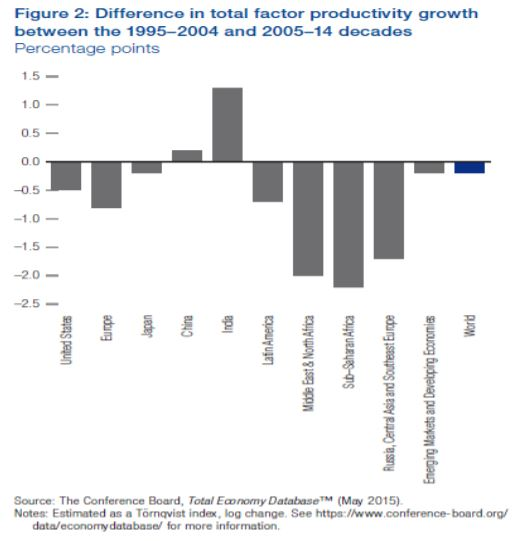

Graphs help in summarizing the flow in a diagrammatic way which is easily readable and understandable by anyone. The below shows the benefits of graphical representation in a systematic way. There are various types of graphs such as bar graph, line graph, doughnut graph, pie chart, radar and so on. The organized way of representing graph includes presence of data points, explanation of encoding, labeled axes and presence of units.
let's see some of the organised graph formats:
1] Appropriate data should be mentioned. Data forms the foundation of the graph or chart.
2] The graph should have a proper title which should be self explanatory.
3] The encodings should be represented properly with the explanation of each section/color.
Ex: If a bar graph is represented with a black and white bar then each color of the bar encoded should be explained briefly at the end of graph or by highlighting
4] Figure number or graph number should be mentioned at the end or beginning of the graph.
5] Graph should be labeled properly. X and Y axis of the graphs should have appropriate labels.
6] Units should be mentioned in the explanation or labeled in the axes.
Ex: The formats such as number, percentage, measures.
7] Use of correct graph.
8] Break symbol should be used if the point is not starting from initial point zero
9] Proper encoding colors should be used to make out the difference between the sections.
10] The graph should be understandable. The plots should be simple and readable.
Example of incomplete graph:

This is a upside down bar graph. Looking at the graph we can say it clearly represents the total factor productivity
growth during the respective years.
Cons:
The y-axis label is not pointed properly. The label should be either written horizontally beside the axis or
a pointer should be displayed beside the label indicating the axis.
The bars contain 2 colors grey and here blue does not give the highlighted point.
The bar colors explanation is not mentioned as what these color represent which makes the graph incomplete
To conclude the raw data should be transformed to information that can be easily readable and analysed. The graphical representation helps decision makers to make appropriate and fast decisions. Choosing the correct graph and representation is important else it might mislead the data.